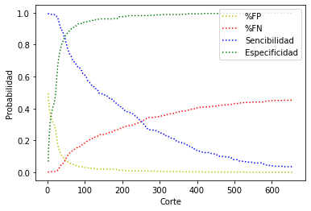

Objetivos:Realizar un buscador de noticias especializado en un tipo especifico de contenido
Metodología:
Para la realizacion de este proyecto separo en 3 modulos principales, uno que fue la busqueda de la información, el segundo optimización en la busqueda y el tercero la presentacion del contenido
• PRIMER MODULO
Se realizo con python con el uso de las librerias: pandas, sqlite3, scrapy, request, nltk, sklearn, os, time; el desarrollo consistio en realizar 2 tipos de busqueda, uno con busqueda RSS de una lista de paginas (RSS es una estructura que recopilar información en algunos sitios web) y el segundo extraer informacion de las noticias de google con una busqueda de palabras clave.
Obtenida la información se procedia a limpiar y guardarla a una base de datos, con la información obtenida se asignó una calificación por palabras o grupos de palabras de interés
• SEGUNDO MODULO
Una vez guardada la información en la base de datos se prosiguio a hacer una limpieza manual para determinar que noticias eran las que nos interesaban marcandolas con un 1 y cuales la que no marcandolas con un 0, esto para poder hacer un analisis mas profundo.
Para la optimizacion se realizo una prueba diagnostica, con el fin de determinar la eficiencia de la busqueda de las noticias y tambien para determinar las modificaciones de como calificar el contenido, ademas de buscar la calificación optima de nuestras noticias donde se optienen el menor numero de falsos negativos y falsos positivos (Entiendase como falso positivo las noticias marcadas como 1 por debajo de una calificacion de corte y como falso negativo las noticias marcadas con 0 que su calificacion este por arriba de la calificacion de corte)
Con los resultados optenidos se puntuaba diferente las noticias, para la cual se implementaron metodos con python para recalcular las calificaciones y guardarlas en la base de datos.
• TERCER MODULO
Para presentar la informacion se ocupo python,HTML,css y JavaScript, por parte de python se uso la paqueteria flask y sqlite3 para levantar el servicio y hacer las consultas de las noticias, por el lado de la visualizacion de ocupo HTML con jinja
Resultados:
Dentro del analisis estadisto hecho, se llego a un area bajo la curva roc de 0.85 lo cual es vastante bueno, ademas de que la informacion que se muestra se hace en la calificacion de corte optima
A continuacion se muestran las imagenes de los resultados, para ver la imagen completa dar click sobre ella.
Grafico de indicadores interactivo
Grafico de indicadores

A continuacion se muestran las imagenes de la pagina, para ver la imagen completa dar click sobre ella.
Visualizacion HTML

Visualizacion con python